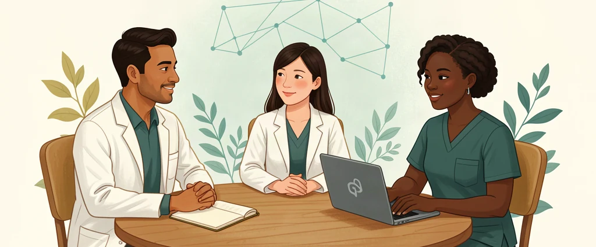

Health administrator
A cross-role illustration of organizational planning and human accountability.
NURSE AI OS · PHYSICIAN PATHWAY

Nurse AI OS is a nurse-centered professional operating environment that can support physicians who coordinate care, lead teams, develop a practice, or contribute knowledge. Its nursing foundation places continuity, human dignity, collaboration, and stewardship at the center of intelligent work.
Create your physician SOUL draft
A NURSE-LED INVITATION TO SCALE GOOD
You do not need to become someone else to begin. Bring the judgment, experience, and wish to be useful that you already carry. We want to equip clinicians—and people whose work is healing, restorative, or stewarding—to learn together and make more good possible.
As a nurse leader would guide a new colleague: begin with one manageable task, protect what has been entrusted to you, ask when uncertain, and review before acting. Careful governance is our method of care at scale. It protects dignity, makes responsibility visible, and helps a generous intention become trustworthy practice.
Our personal-AGI philosophy is a person-centered aspiration, not a claim of achieved AGI. “The heart of a nurse” names the values people bring to the architecture—not a conscience or clinical competence inside a model. We are building human capability and community, not dependence on an agent.
WATCH · REFLECT · KEEP JUDGMENT HUMAN
These videos are illustrative and educational: explore professional organization, stewardship, and the principles behind a purposeful AI workspace. They are not credential verification, assessed competence, clinical instruction, or proof of installed safeguards. Different professions retain their own scope and responsibilities.
Your choice to connect: loading a player contacts YouTube and may share your IP address and device information under its privacy terms. We use privacy-enhanced embeds, but this is not anonymous or offline viewing. No autoplay; no YouTube player or thumbnail is requested until you choose a video. Direct links also contact YouTube. Captions, availability, and playback controls are supplied by YouTube.
A cross-role illustration of organizational planning and human accountability.
An illustration of a learning and professional-development workspace; not residency accreditation or clinical authorization.
A related advanced-practice perspective. Nurse practitioners are a distinct profession; this example does not transfer credentials or authority to physicians or agents.
Conceptual orientation—not a current technical installation specification. Read the corrections below and follow the current setup guide.
Without a management or business role: prepare learning plans, organize public evidence, draft non-patient-specific teaching materials, and structure interdisciplinary discussions for human review.
With management responsibilities: prepare meeting agendas, map project dependencies, track explicitly accepted commitments, and surface decisions that remain with authorized humans. A leadership title never grants access automatically.
With a business: draft a service concept, map nonclinical processes, organize research, and prepare governance questions. Keep business, clinical, and personal contexts separate. No autonomous purchasing, financial, personnel, or patient-care actions.
Review educational resources, attach provenance, document limitations, propose improvements, and maintain shared assets with named owners and review dates. Contribution is optional; publishing and admission require separate review.
Care coordination depends on connecting people, knowledge, decisions, and follow-through. These are precisely the professional work patterns Nurse AI OS is designed to organize. Its intended value is not replacing clinical expertise, but preparing clearer information, preserving context across handoffs, and making responsibility visible.
These are design goals, not evidence of validated clinical outcomes or complete runtime enforcement. The nurse-led foundation supports interdisciplinary collaboration; it does not give physicians nursing credentials or transfer any clinician’s professional authority to an agent.
You remain responsible for your actions through Nurse AI OS. Review accuracy, sources, permissions, recipients, and consequences before relying on or acting on output. You remain accountable for your own professional decisions and legal, ethical, contractual, and institutional obligations. This does not remove the responsibilities of developers, institutions, or other parties.
This pathway does not authorize PHI, patient-identifiable narratives, EHR access, patient-specific recommendations, diagnosis, prescribing, treatment, autonomous triage, personnel decisions, or payments. Use approved institutional systems and authorized human processes for those activities.
Do not enter patient details, confidential business records, credentials, or employee information into the quiz. No role choice, download, or SOUL file proves compliance, credentials, institutional approval, or permission to use an employer’s systems.
Save your SOUL quiz result, download the dashboard and Mission Control starter package, check Hermes Desktop compatibility, and prepare a clean local workspace. Then select your provider and ask Hermes to review the package before any separately approved changes.
Next steps & starter downloadsAt the end of your setup journey, you may choose a quiet charter-acceptance ceremony. Memorialize your own commitment with a non-credentialing certificate, then learn to shape your agent into a thoughtful thinking partner and a bounded Chief of Staff.
Read the charter and companion guide